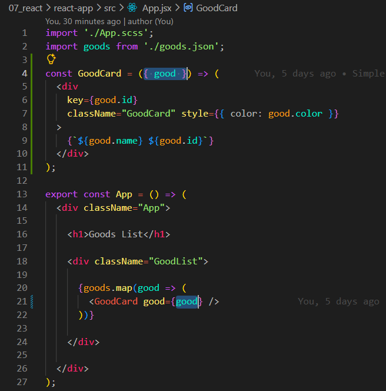
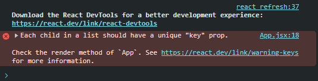
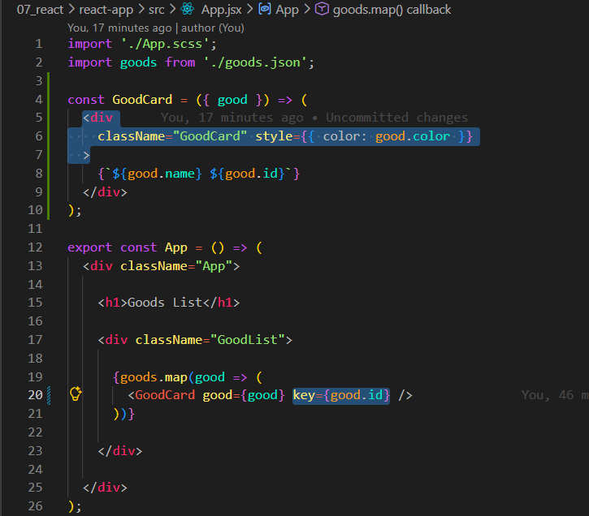
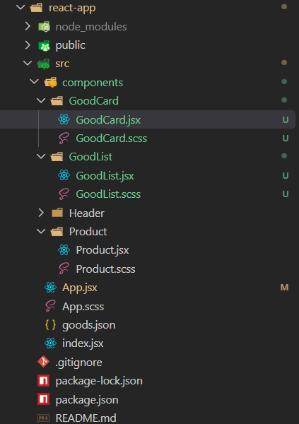
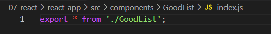

Anteriormente, usamos um array de dados para imprimir uma lista de produtos na pagina. Porem em nosso uso cotidiano, esse cartao pode ser muito maior. Podendo haver muitas tags, alguma logica adicional e assim por diante. Entao geralmente faz sentido o extrairmos para um componente separado.
Entendendo Melhor:
Para entendermos melhor, continuaremos em nosso projeto react-app e continuaremos com o mesmo conteudo (codigo) da aula anterior. Sendo as alteracoes no App.jsx e nossa criacao do goods.json.
Separando Componentes
Para iniciar iremos inicialmente ja criando uma nova variavel em nosso App.jsx e nomea-la igual a class, e ela sera um componente que retorna JSX, ficando da seguinte forma:
Feito isso ele ainda nao esta completo, pois nosso componente GoodCard, ele nao sabe oque é good. Temos que passar isso atraves de props.
Iremos comecar passando o parametro goods que é igual ao nosso objeto (good) e parametro da iteracao. Ficara da seguinte forma:
import './App.scss';
import goods from './goods.json';
const GoodCard = ({ good }) => (
< div
key={good.id}
className="GoodCard" style={{ color: good.color }}
>
{`${good.name} ${good.id}`}
< /div>
);
export const App = () => (
< div className="App">
< h1>Goods List
< div className="GoodList">
{goods.map(good => (
< GoodCard good={good} />
))}
< /div>
< /div>
);

Feito isso agora ira funcionar. Porem ao verificarmos na devTools veremos um erro:

O problema é que separamos o atributokey da iteracao real. E na verdade nao é mais necessario em nosso elemento onde se encontra, ele sera necessario na tag que fica dentro da iteracao apos o map. Entao iremos remover o key de onde ele esta no momento e iremos passar ele para dentro de nossa tag com a iteracao. Ficando da seguinte forma:
import './App.scss';
import goods from './goods.json';
const GoodCard = ({ good }) => (
< div
className="GoodCard" style={{ color: good.color }}
>
{`${good.name} ${good.id}`}
< /div>
);
export const App = () => (
< div className="App">
< h1>Goods List
< div className="GoodList">
{goods.map(good => (
< GoodCard good={good} key={good.id} />
))}
< /div>
< /div>
);

Feito isso nosso erro sumira. Movemos nosso component goodCard, o mesmo pode ser feito agora com o goodList.
Para isso tambem iremos fazer o mesmo, criar uma nova variavel com o mesmo nome que retornara JSX:
Apos criarmos a funcao de retorno do JSX, iremos recortar nossa taggoodList e cola-la em nossa nova funcao.
Em seguida podemos a inseri-la da mesma forma como < GoodCard />. Ficando tudo da seguinte forma
Claro que cada componente deve estar em seu proprio arquivo. Alem disso como cada um deles tem seus proprios estilos, pode haver alguns outros arquivos, dito isso iremos criar alguns diretorios/arquivos para cada um deles.
Separando Arquivos
Dentro de nosso src iremos criar dois diretorios sendo eles GoodList e GoodCard onde cada um teles tera dois arquivos com seus respectivos nomes um em JSX e outro em SCSS, ficando da seguinte forma:

Apos isso comecaremos com a separacao.
Iremos comecar recortando nosso const GoodCard e o colando em nosso arquivoGoodCard e faremos o mesmo com GoodList. Alem disso tambem precisamos usar o export e o import.
Em nosso GoodCard iremos fazer seu export antes de const e fazer import de seu SCSS.
Em nosso GoodList sera um pouco diferente, temos que passar parametros para ele por conta do goods, entao agora ele recebera o parametro goods e sera nossa array. Em seguida dentro de nosso GoodList, precisa aceita-lo.
Em nosso GoodList, podemos obsevar mais mudancas como:
Import de nosso GoodCard e SCSSexport e precisamos tambem adicionar o parametro goods para fazer a desestruturacao.
Opcoes
Opcionalmente podemos tambem, nao passar todos os elementos, por exemplo passando apenas os 5 primeiros, para isso em nosso App.jsx em nossa tag < GoodList /> em seu atributo podemos passar um metedo slice. Exemplo:
Em nosso GoodList.jsx, iteramos sobre o goods recebidos e imprimimos o cartao (tag/card) para cada produto. É importante que apos o map adicionarmos o key. Essa key deve ser unica e vinculada ao elemento de array.
O componenteGoodCard ja contem o layout necessario para cada cartao.
Uma das coisas que podemos melhorar é a forma como importamos o arquivo. Pois em nosso App.jsx em nosso import, temos que escrever o GoodList duas vezes:
App.jsx
import { GoodList } from './components/GoodList/GoodList';
Isso pode ser evitado se criarmos um arquivo de indice, entao em nosso diretorio GoodList iremos criar um novo arquivo e chama-lo de index.js, iremos querer exportar tudo desse arquivo, e para fazermos isso em nosso index.js ficara da seguinte forma:
export * from './GoodList';

Usamos o asterisco *, para exportar tudo dentro de nosso './GoodList';. Agora para conectarmos esse arquivoindex.js, iremos precisar especificar o caminho para o diretorio e por padrao a importacao procurara o arquivo index.
Com isso agora em nosso App.jsx podemos fazer da seguinte forma:
import './App.scss';
import { GoodList } from './components/GoodList';
import goods from './goods.json';
export const App = () => (
< div className="App">
< h1>Goods List
< GoodList goods={goods.slice(0, 5)} />
< /div>
);
Com isso agora usamos apenas uma vez o GoodList no import.
Podemos fazer o mesmo com GoodCard.
Porque nao escrever tudo diretamente no index.js ?
O problema é que nossos arquivos entao terao todos o nome indexIndex e isso nao seria conveniente, pois nem sempre entenderemos pelo nome qual componente é.